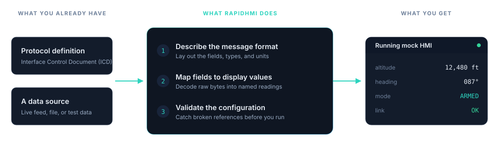

Hardware is a bottleneck
Test rigs and labs are costly, shared, and hard to book. Work stops while teams wait for access.
RapidHMI turns your protocol definitions into a working mock Human Machine Interface (HMI), the screen an operator uses to monitor a system. Feed it real or test data to check your data flows and catch mapping errors early, instead of waiting on the hardware, the lab, or the final HMI.
Early-stage prototype under active development. Binary protocols are supported first, with JavaScript Object Notation (JSON), Data Distribution Service (DDS), and Controller Area Network (CAN) planned.
"We're still waiting on the real HMI."
"We need to test before the hardware arrives."
"The ICD says one thing, the system sends another."
"We keep building the same throwaway tools."
On large programs, the parts of a system are rarely ready at the same time. Teams wait on shared hardware, the final HMI, or a lab slot. By the time everything comes together, mapping and configuration problems are expensive to find and slow to fix.
Test rigs and labs are costly, shared, and hard to book. Work stops while teams wait for access.
What the Interface Control Document (ICD) specifies and what the system actually sends often differ. That gap usually surfaces late.
Engineers rebuild one-off test scripts for every project instead of reusing one repeatable setup.
Reproducing a problem can need several teams in the room at once. Every cycle takes longer than it should.
Most teams already solve this problem on every project. The work lands on an engineer or two, gets written under delivery pressure, and is rebuilt from scratch the next time round. RapidHMI is meant to take the place of that recurring effort.
Quick utilities to parse a feed or print decoded fields, written for one task and rarely documented.
Small desktop apps that show a handful of values, maintained by whoever happens to be free.
One-off viewers for a specific message format that don't survive past the program they were built for.
Scripts that open a socket, dump packets to the console, and get deleted once the task is done.
Excel sheets mapping bytes to fields and units, kept in step with the real system by hand.
Bespoke rigs to inject messages, rebuilt each time because the last one was too project-specific to reuse.
None of these are the wrong call in the moment. The cost is that the same work is repeated on the next program, and the next. RapidHMI aims to replace that cycle with one reusable platform: the same load, validate, run workflow on every project, instead of a fresh throwaway utility each time.
You tell RapidHMI where the data comes from and how the messages are laid out. It checks the configuration, then runs a live mock HMI you can feed with real or test data. No protocol-specific scripts scattered across the team.

RapidHMI checks the configuration first and reports missing references, duplicates, and format errors. A small mistake in the data definition no longer wastes a whole test session.
Send your own crafted messages to the mock HMI to exercise specific fields and edge cases, without waiting for the live source to be available.
The team sees incoming values in one place, so it is clear how the messages on the wire map to what appears on screen.
This is an early prototype. The current focus is binary protocols and a clear load, validate, run workflow that teams can rely on. We would rather do that part well than claim more than the tool does.
Keep a project's data sources, message formats, and mappings together in one file you can version and reuse.
A simple workflow with clear stages, so it is obvious what is being checked and what is being executed.
Catch broken references, duplicates, and format problems before runtime, with clear messages.
Describe where incoming data comes from and how it is received.
Turn raw bytes into named, readable values using the message format you define.
Watch decoded values update as data flows in, in one place.
Feed crafted messages into the running mock HMI to test specific cases on demand.
An invalid project is stopped before it starts, so you do not chase faults that the configuration could have caught.
RapidHMI is being designed around the real cost of late integration. These are the recurring costs it aims to reduce, the reasons a team would choose it over rebuilding tooling again.
Move work off shared rigs and expensive labs onto a desktop, so progress doesn't stall waiting for a slot.
Describe the data once and reuse it, instead of writing fresh code for every interface on every project.
Find mapping and configuration faults early, when they are cheap to fix, not at formal integration.
Reproduce and inspect a problem from one place, without pulling several teams into the lab for every cycle.
Replace one-off scripts with a setup the whole team can version, share, and carry to the next project.
Cut the time and money spent re-running integration each time a definition or mapping changes.
The question isn't whether your engineers can write another viewer or test harness. Clearly they can. It's whether it's worth rebuilding the same tool, program after program, instead of investing once in something that carries across them.
To be clear: RapidHMI is early, and for some jobs a quick script will always be the right answer. The point isn't that internal tooling is wrong. It's that the same problem recurs on every integration program, and a reusable platform removes the repeated cost of solving it from scratch.
RapidHMI is being built for the people who feel late integration first, on large programs in regulated and safety-critical industries.
RapidHMI is being built as an integration platform. The mock HMI proves the core idea: describe your data once, then work with it live. The same foundation is designed to grow into the wider toolset integration teams already reach for, while the load, validate, run workflow stays the same.
Load a project, validate it, run a mock HMI, and watch decoded values update.
Support for JavaScript Object Notation (JSON), a common text-based message format.
Data Distribution Service (DDS) and Controller Area Network (CAN), to cover more integration environments.
Recording and playback of captured sessions, protocol replay against the mock HMI, a visual HMI designer, and automated testing: the full integration workflow, not just live monitoring.
Each step reuses the same core, so the platform grows by extension rather than by bolting on unrelated features.
Plain definitions for the terminology above, for anyone newer to integration work.
RapidHMI is an early-stage prototype, built around real integration problems. If your team waits on hardware, finds mapping issues late, or keeps rebuilding the same tooling, we would like to talk about a pilot.
No production claims. This is an honest look at where the prototype is today.